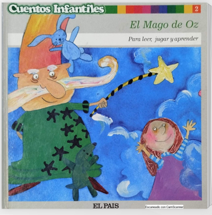

Escucha con atención
La primera tarea será leer y escuchar el cuento "El Mago de Oz". A través del siguiente enlace leeremos el cuento:
https://heyzine.com/flip-book/077b1d8f8f.html

Una vez leído el libro, realizaremos las actividades finales de comprensión del cuento de forma oral en clase.
Ahora será el momento de escucharlo en un audiolibro para comprender genial la historia:
https://padlet.com/cromgom205/viaje-magico-a-oz-iava9m4wx46pqsfm/wish/yEPVZkon4XVjZb0Y